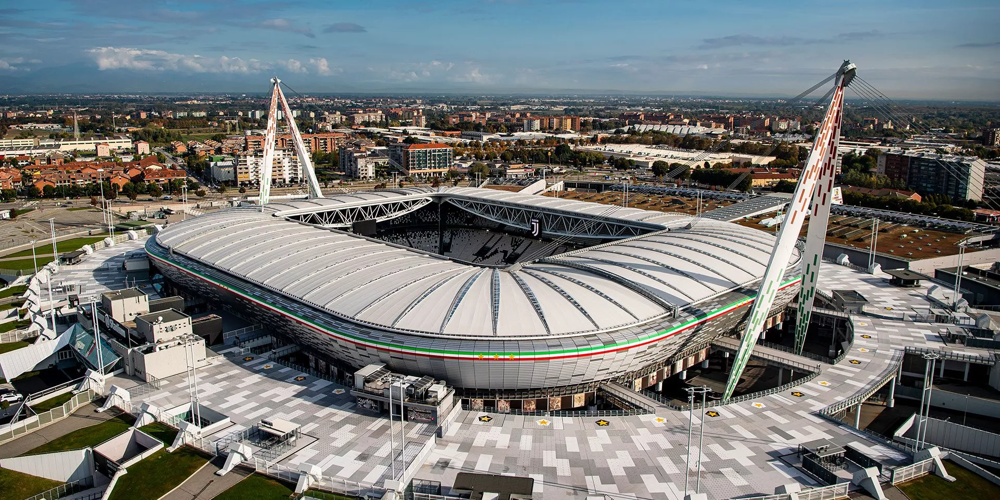
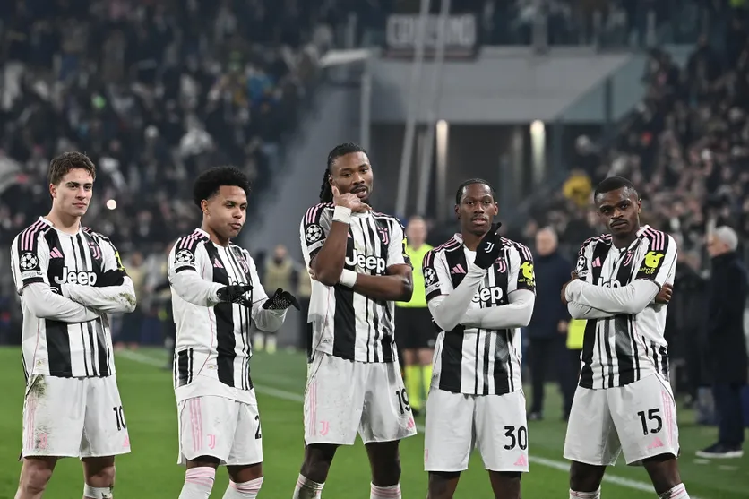

La Juventus FC, fondata nel 1897, è molto più di una semplice squadra di calcio: è una vera leggenda dello sport italiano ed europeo. Con la sua iconica maglia bianconera, una storia ricca di successi e il suo stadio moderno, l’Allianz Stadium, la Juventus fa battere il cuore di milioni di tifosi in tutto il mondo. Simbolo di eccellenza, ambizione e vittoria, la Vecchia Signora continua a scrivere la storia del calcio con passione e determinazione.

I tifosi della Juventus FC sono il cuore pulsante del club. Fedeli e appassionati, creano un’atmosfera straordinaria allo Allianz Stadium e incarnano l’identità vincente, orgogliosa e determinata della Juventus. Conosciuti in tutto il mondo, i sostenitori bianconeri rappresentano una vera forza, sempre pronti a sostenere la Vecchia Signora in ogni sfida.

La Juventus FC è il club più titolato d’Italia, con i suoi numerosi titoli nazionali che hanno segnato la storia della Serie A. Grazie a giocatori leggendari e a campagne europee memorabili, la Juventus ha costruito una tradizione di eccellenza, diventando uno dei club più prestigiosi e rispettati del calcio mondiale.

Il palmarès della Juventus FC testimonia la sua grandezza. I numerosi trofei nazionali, tra cui campionati e coppe, sono la prova della costanza e dell’eccellenza della Juventus nel corso della sua storia. Grazie a una mentalità vincente e a un livello sempre elevato, la Vecchia Signora si è affermata come uno dei club più dominanti del calcio italiano ed europeo.
Su questo sito puoi trovare tutte le informazioni più importanti sul club. Scopri la rosa completa e conosci meglio i giocatori della Juventus FC, rivivi i grandi momenti del palmarès, esplora le maglie storiche e attuali, segui le prossime partite, immergiti nella storia del club e delle sue leggende e scopri lo Allianz Stadium attraverso immagini e curiosità.